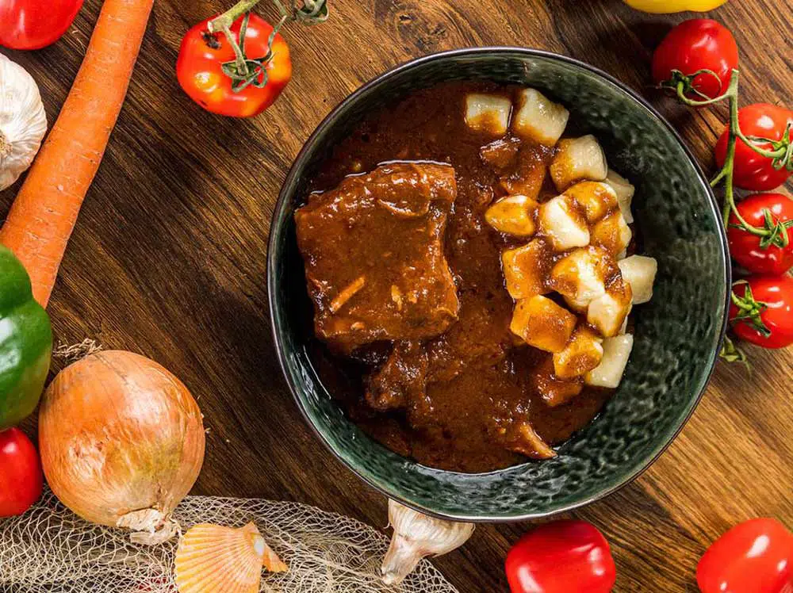
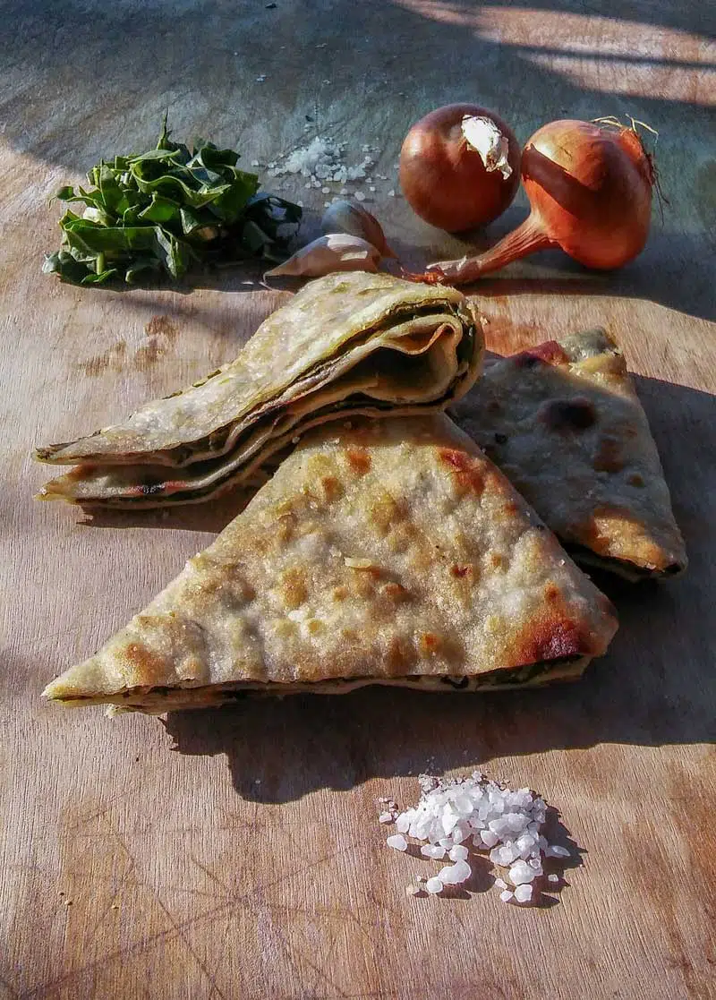

Svako jelo krije svoju priču, a prehrana se razlikuje među pojedinim mjestima i može se podijeliti na ribarsku,
koja je karakteristična za otoke, i težačku što je vrlo čest slučaj u dijelu zaleđa. Kada smo već kod kultnog
dalmatinskog pjata, mnogi će se složiti da je dalmatinska pašticada pravi biser hrvatske gastronomije i jelo koje
odiše autentičnim okusima stare Dalmacije.
Usitnjeni listovi blitve pečeni između dva tanka sloja najosnovnijeg tijesta: to je, najjednostavnije opisano,
soparnik, autohtono jelo iz Poljica koje se nalazi na UNESCO-voj listi zaštićene nematerijalne baštine.
Unatoč jednostavnom opisu, soparnik je ipak puno više – on je hrana i tradicija u jednom. Na području južno od Splita,
u brdima iznad Omiša u Dalmatinskoj zagori, gdje su danas Poljica, a nekada je bio prostor Poljičke republike,
ovo se jelo priprema još od vremena Turaka, odnosno od 15. i 16. stoljeća.
